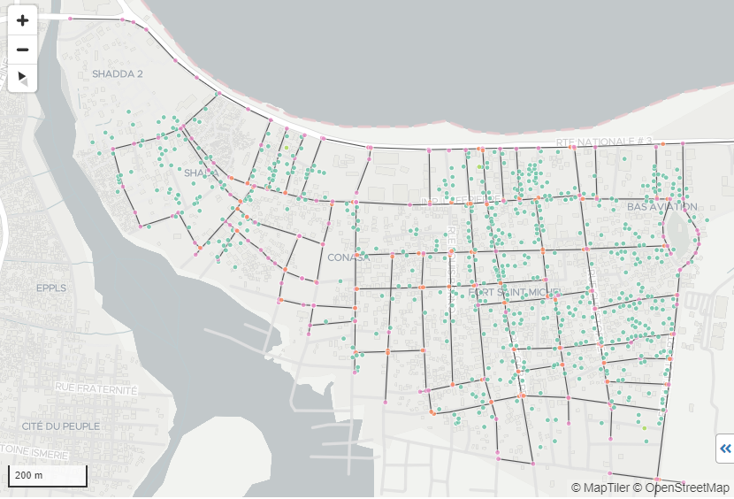
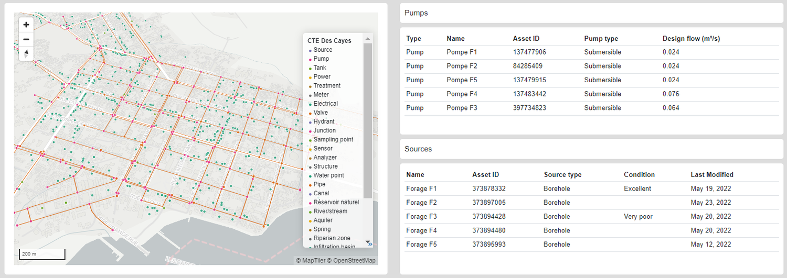
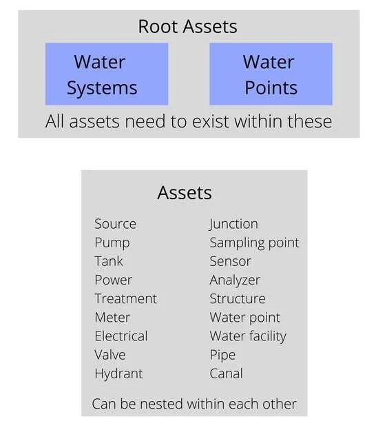
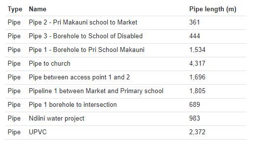
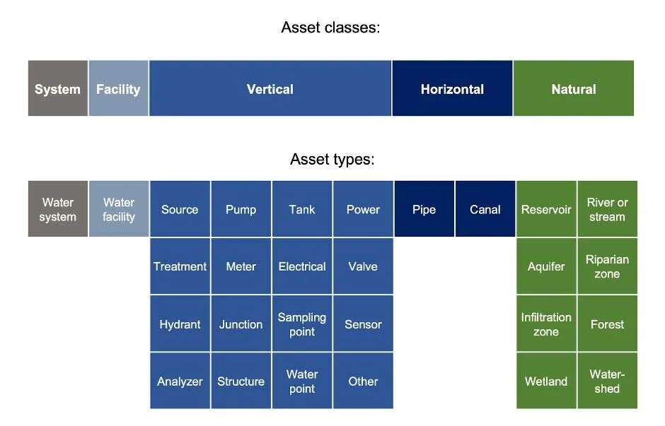

Good asset management is fundamental for achieving sustainable service standards for water customers whilst keeping the costs and risks of owning and operating assets over their life cycle low.
Asset systems in mWater now allow you to freely map and track all of your water system assets anywhere in the world to the level of detail that works best for you. Having an accurate view of a system's assets will then support your asset management processes.
mWater provides standard data fields that you can fill in for all key asset types in a straightforward way, either in the field with the Surveyor App, or through your computer on the mWater Portal.
You can organize assets in the hierarchy that best helps your asset management. For small systems, you may only want to map water sources, taps and main pipes. But there is no limit to the scale of the system you are mapping, so you can locate and track every valve, meter and junction as well. Having a systematic, digitized view of your key water system assets, their age, location and condition can swiftly help you prioritize investments and repairs.
The data is synced on mWater's servers so it's available across your field teams and offices, however you always fully control the data you collect and who sees it. Leveraging mWater's existing data management and visualization features in the Portal allows you then to display and analyse the asset data you collect in ways that best match your workflow.
Map Water Systems Large and Small


Create an Effective Asset Hierarchy
mWater's standard asset data fields ensure you can capture relevant data for each data type. In addition, you can fill in your own questionnaires to gather any other data.
However, organizing your assets in a hierarchy under a root asset (water system) is up to you. For example, you can have all of your distribution network under one asset, keep track of your treatment facilities under another, and then all your production equipment under a third. Alternatively, for smaller systems you might just list all assets directly under the water system.
Powerful search features allow you to quickly find any asset and examine it in detail.
Track Pipes in the App
Whilst physical assets like storage tanks and power supplies are best stored as GPS-located points, mWater also allows you to map pipes as lines either in the App or the Portal.
In the App you can set pipe waypoints through a manual interface, or you can walk along the route of the pipe and use the device GPS to pinpoint the path of any pipe.
The system will calculate the length of the pipe automatically, but you can also enter a manual value. Finally, you can link pipes and other assets through the upstream asset property.

Asset Systems in the Portal
The assets you have mapped are visible to you in the mWater Portal where you can view asset details, create reports and even highlight assets based on criteria, such as being broken, or needing to be inspected.
All asset system data collected in mWater that you have user access to is also available as a data source for any maps, dashboards and consoles you create. So you can freely customize an operational dashboard that allows you to analyze just the data that is most useful for you.
The best way to begin exploring your asset data is to create an asset console. You can do this from Visualizations -> Consoles by creating a new console and selecting Water assets console and then selecting your system.
Asset templates give an effective summary of your water system, but also provide details across different tabs, including asset details, maintenance information highlighting assets in poor condition, as well as financial data such as asset replacement costs. You can further edit any aspect of your console right away.
mWater's visualization features are interactive by default, so that once you've created a console or custom dashboard, you can easily filter your view to, for example, assets of a certain type that are broken at the moment.
You can also always export asset data you collect into other systems by using the datagrid feature in mWater.
See this guide on how to start building your own asset dashboard.
The Water System Management Standard
The standard data fields for assets draw upon the Water System Management Standard developed by the mWater Foundation with funding from the United States Agency for International Development. This is in response to demand from water authorities, utilities, government agencies, financial institutions, international development organizations, and engineering firms to specify a data structure and useful set of definitions to facilitate the capture, use, and sharing of data about water supply infrastructure.
Water supply infrastructure includes the physical assets and natural assets involved in the abstraction, storage, treatment, and distribution of water. Physical assets of a water system include hydraulic structures and components, electromechanical equipment, and civil engineering works. Natural assets, also known as green infrastructure, are natural landscapes and ecosystems that are strategically managed to provide ecosystem services that may enhance or substitute for physical assets in the production or management of water for human use.

Each asset has some attributes. Attributes are the individual pieces of data about a particular asset that describe important characteristics, such as the equipment manufacturer and model, condition and current operational status, and other technical details that relate to certain types of assets. The standard outlines in detail each of the chosen asset types and the attributes and their meaning.
Learn more about the standard here.
You can use mWater's asset system features for free at any scale. Find out more at portal.mwater.co.